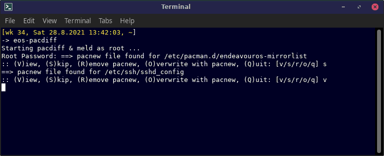
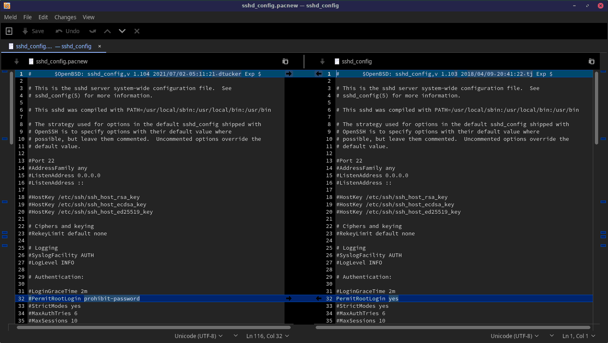

eos-pacdiff combines the pacdiff program
with a user-selectable file comparison program as a convenient and
easy-to-use entity.
User can select the file comparison program with
variable EOS_WELCOME_PACDIFFERS in file
/etc/eos-script-lib-yad.conf.
Currently
meld is the recommended file comparison program.


Usage: eos-pacdiff